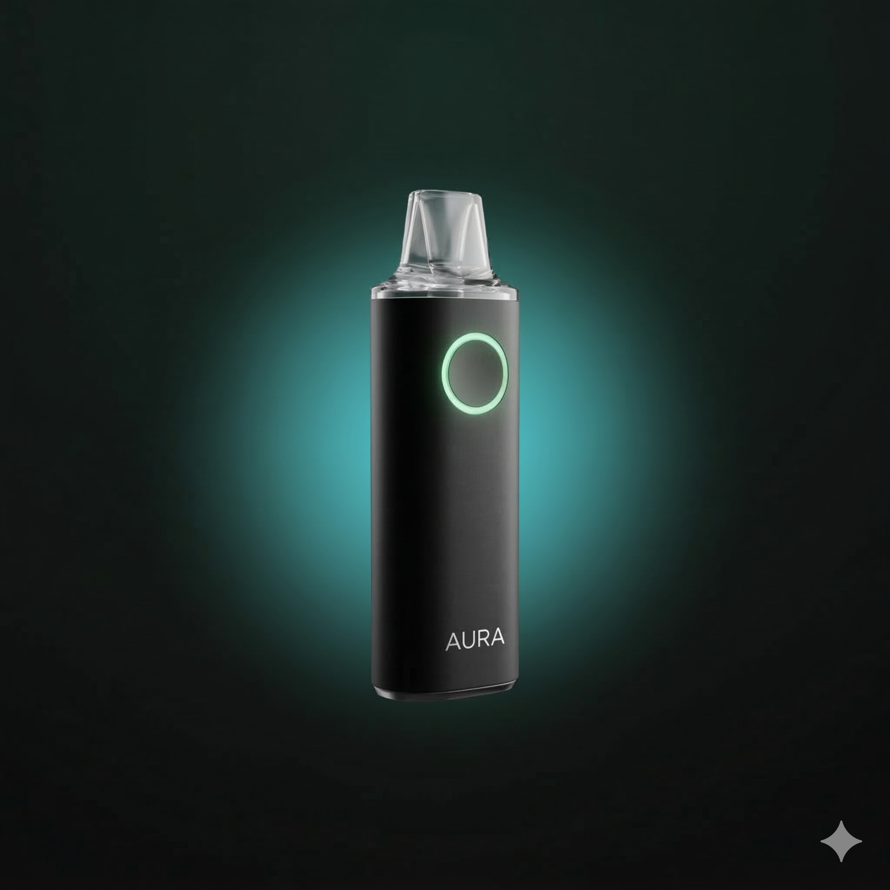

Bridging the gap between feeling fine and optimal health.

Modern healthcare excels at detecting disease early — but not at optimizing health before symptoms appear. Aura bridges that gap: turning invisible metabolic signals into daily insights for proactive, pre-symptomatic health optimization.
Just 5 seconds each day. Aura collects your exhaled VOCs for precise metabolic measurement.
Our sensor detects biomarkers like Acetone, Ammonia, and Methane — key indicators of fat burn, protein load, and gut health.
Aura's app delivers an intuitive "Internal Weather Report," transforming data into actionable lifestyle recommendations.
Designed for high-performing urban professionals who view their body as an investment — entrepreneurs, executives, and wellness‑focused individuals seeking an edge in performance and longevity.